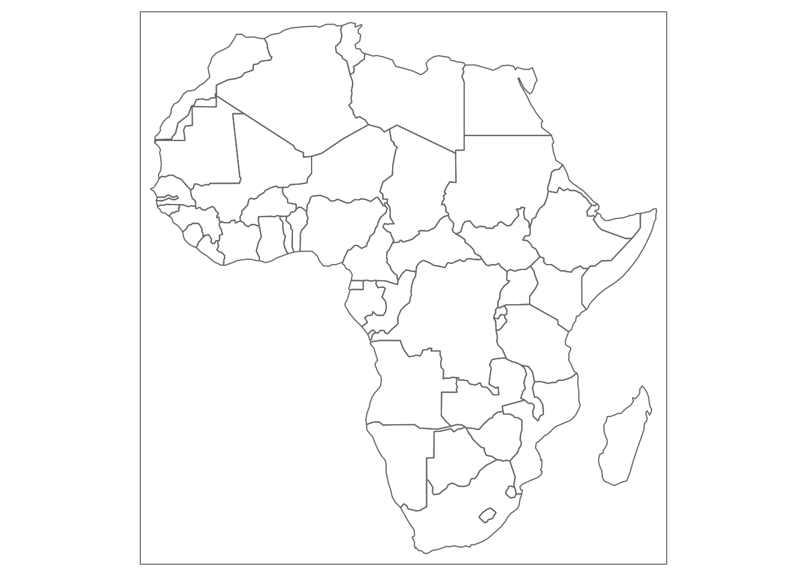

Chapter 4 Chapter 4 Spatial data types focusing on real examples: cities, roads, admin boundaries, surfaces
4.1 Overall goal of the chapter
Focus on functional use of spatial data types! –>Short recap of chapter 3 The goal of spatial maps is to model reality. Spatial data types are the information that the R-software needs to visualise spatial data in a digital format. This section presents the four main data types used for spatial mapping and their visualisation: points, lines, polygons and rasters.
–> interactive image with a different layer for points, lines, polygons and rasters (great to already have a simple visualisation of the topics to be discussed in this chapter
There are two groups of spatial data: vector and raster. Vector data consist of points, lines and polygones, which are visualised using coordinates. Raster data is made up of a grid of pixels each containing data.
Spatial data can be stored in many different formats: Shapefile (.shp + .dbf + .prj + …), GeoPackage (.gpkg), GeoJSON (.json), GML (.gml), SpatiaLite (.db), and many more (.gpx, .csv). The most common is Shapefile, which consists of at least three files (geometry, attribute data, CRS). Another standard is the GeoPackage, which is just one fil. It can store multiple vector data layers, as well as non-vector data such as satellite images and tables of metadata.
It is important to keep in mind that all spatial data types require a spatial reference frame/coordinate system identification. The spatial reference frame consists of an origin and axes, so that coordinates can be placed at the right location.
–>Reading in files: In R, the sf package provides an interface to OGR (explanation necessary?). The package provides classes and methods for dealing with spatial data in R with a geometry list-column. . A similar (but more outdated) package is sp.
This chapter is written for beginners, who have basic knowledge of R and no experience with spatial data. More advanced readers can move to the next chapter where visualisation of data types are explained in more detail.
4.1 Learning objectives
- Describe the difference between points, lines, polygons and raster data types
- Identify data files from the four different spatial data types
- Open data files from the four different spatial data types in R
- Visualise data files from the four different spatial data types in R
4.1.1 The Episodes
4.2 Episode 1: points
4.2 Learning objectives
Identify point data files Open point data files *Visualise point data files
-sighting of animals: health centres. - Let’s take an imaginary walk outside. What do you see? Houses, cars, trees… All these things have unique coordinates that can be used to identify their exact location. On a map, instead of drawing an entire house or tree, these can be visualised as points with their latitude and longitude coordinates.
–>image of houses, cars and trees with dots inside (with coordinates scale)
- Depending on the scale of your map, larger surfaces (cities) can also be visualised with points. What your points represent is dependent on the scale of your map.
4.2.1 Example
Please note that more information can be found about the different packages using the Help tools explained in chapter 3.8
Reminder of necessary packages
library(afrilearndata) #load afrilearndata package
data(africountries) #In case data isn't loaded into your R environment
data(africapitals)
data(afrihighway)
data(afripop2000)Download and load the sf package (if this hasn’t been done before)
Let’s look at the african capitals as an example of point data.
## Geometry set for 50 features
## geometry type: POINT
## dimension: XY
## bbox: xmin: -17.48 ymin: -29.31 xmax: 47.51 ymax: 36.84
## geographic CRS: WGS 84
## First 5 geometries:The file contains 50 points with geometry type POINT.
If we print the first 6 rows of data, we can see how each African captial is stored in the database
## Simple feature collection with 6 features and 4 fields
## geometry type: POINT
## dimension: XY
## bbox: xmin: -0.2 ymin: -18.89 xmax: 47.51 ymax: 36.77
## geographic CRS: WGS 84
## capitalname countryname pop iso3c geometry
## 280 Abuja Nigeria 178462 NGA POINT (7.17 9.18)
## 308 Accra Ghana 2029143 GHA POINT (-0.2 5.56)
## 382 Addis Abeba Ethiopia 2823167 ETH POINT (38.74 9.03)
## 996 Algiers Algeria 2029936 DZA POINT (3.04 36.77)
## 1584 Antananarivo Madagascar 1463754 MDG POINT (47.51 -18.89)
## 2193 Asmara Eritrea 578860 ERI POINT (38.94 15.33)Point data only have one latitude and longitude value. The geometry of the point data is stored as POINT (Latitude, Longitude).
Please note that this database also includes the population of the capital as a seperate data column.
Lets visualise the African capitals by plotting their geometry.
library(tmap) #Do they already know how to use this? Or do we focus on simple plotting?
tm_shape(africapitals) +
tm_dots("red") # displaying the point geometry as red dots
4.2.2 Exercise (still need to work on these)
-example using same capital data -We have visualised all capitals with 1.400.000 people or over using green squares. However, the code isn’t working. Can you find the mistakes?
Answer: (need to add errors)
4.2.3 Exercise 2 (using different data: museums, universities? )
4.3 Episode 2: Lines
4.3 Learning objectives
- Identify line data files
- Open line data files
- Visualise line data files
The capitals visualised in previous episode are a group of dots accross a white page. Not very informative.
Usefull to know how these cities are linked to one another using the trans african highway network (afrihighway).
Lines are one dimension data with are drawn using points which are connected to eachother in a set order.Depending on the detail of the map, more or less points can be used. These become networks
4.3.1 Example
## Geometry set for 100 features
## geometry type: LINESTRING
## dimension: XYZ
## bbox: xmin: -17.38929 ymin: -33.95247 xmax: 43.13781 ymax: 37.08586
## z_range: zmin: 0 zmax: 0
## geographic CRS: WGS 84
## First 5 geometries:The file contains 100 lines with geometry type LINESTRING.
If we print the first 6 rows of data, we can see how each highway is stored in the database
## Simple feature collection with 6 features and 1 field
## geometry type: LINESTRING
## dimension: XYZ
## bbox: xmin: -17.36938 ymin: 14.76957 xmax: -6.800537 ymax: 33.98436
## z_range: zmin: 0 zmax: 0
## geographic CRS: WGS 84
## # A tibble: 6 x 2
## Name geometry
## <chr> <LINESTRING [°]>
## 1 Western Sahara (Morocco… Z (-16.94778 21.34438 0, -16.85303 21.96343 0, -16.5…
## 2 Mauritania Border- Daka… Z (-17.36938 14.76957 0, -16.9519 14.77488 0, -16.73…
## 3 Nouakchott- Senegal Bor… Z (-15.81069 16.52036 0, -16.11694 16.72039 0, -16.1…
## 4 Western Sahara Border- … Z (-15.99128 18.08646 0, -16.01807 18.49003 0, -16.1…
## 5 Marrakesh- Western Saha… Z (-12.95837 27.67623 0, -12.7002 28.0041 0, -12.128…
## 6 Rabat- Marrakesh Link Z (-8.12439 31.79238 0, -8.02002 31.8589 0, -7.91564…Line data contain a whole string of data points with latitude and longitude. These points are connected to form a line. The geometry of the line data is stored as LINESTRING(Latitude1, Longitude1, Latitude2, Longitude2, Latitude3, Longitude3,.. ).
Lets visualise these linestrings in red

Now we add the capitals from previous episode in blue
4.3.2 Exercise 1
We have visualised all the capitals and only the roads that start with the letter ‘b’… Couldnt really think of another way to play around with the highway data)
-Rearrange code in the correct order (still need to mix it up)
4.3.3 Exercise 2 (different data: rivers in Africa?)
- make this slightly more complicated by selecting rivers than are at least xx km long?
4.4 Episode 3: Polygons
4.4 Learning objectives
- Identify polygon data files
- Open polygon data files
- Visualise polygon data files
If a line has the same first and last coordinate, this creates a closed figure: a polygon. Similar to lines, depending on the detail of the map, more or less points can be used to create a polygon.
Polygons are two dimension data. Examples include country boundaries and continent outlines.
Often times one polygon is not sufficient to visualise complicated shapes. Several polygons are necessary: these shapes are called mulipolygons. The different polygons in one data row indicate either areas to include or exclude from the final image.
For example the continent outline of Africa is a multipolygon.

- One polygon is used to visualise mainland of Africa. An additional polygon is used for Madagascar. Together they represent the whole African continent.
–> This might be a simple polygon and not a multipolygon… An example of a multipolygon where areas are excluded is the country border of South Africa. Lesotho is entirely surrounded by South Africa. If we want to visualise South Africa, we need to make sure that the Lesotho area is excluded. Visualisation of South Africa therefore requires two polygons, one to outline the outer borders and one to highlight the area to exclude (Lesotho country borders).
#africountries_ex=africountries %>%
# filter(`name` == "South Africa")
#plot(st_geometry(africountries_ex), col = "lightblue") - As you can see in the image above, when the border lines of South Africa are visualised, a white area is visible inside the country (representing Lesotho), which is not part of South Africa.
4.4.1 Example
## Geometry set for 51 features
## geometry type: MULTIPOLYGON
## dimension: XY
## bbox: xmin: -17.62504 ymin: -34.81917 xmax: 51.13387 ymax: 37.34999
## geographic CRS: WGS 84
## First 5 geometries:The country border file contains 51 country outlines with geometry type MULTIPOLYGON.
If we print the first 6 rows of data, we can see how each country border is stored in the database
## Simple feature collection with 6 features and 11 fields
## geometry type: MULTIPOLYGON
## dimension: XY
## bbox: xmin: -17.06342 ymin: -13.25723 xmax: 51.13387 ymax: 27.65643
## geographic CRS: WGS 84
## name name_long pop_est gdp_md_est
## 1 Tanzania Tanzania 53950935 150600.0
## 2 W. Sahara Western Sahara 603253 906.5
## 11 Dem. Rep. Congo Democratic Republic of the Congo 83301151 66010.0
## 12 Somalia Somalia 7531386 4719.0
## 13 Kenya Kenya 47615739 152700.0
## 14 Sudan Sudan 37345935 176300.0
## lastcensus income_grp iso_a3 geometry
## 1 2002 5. Low income TZA MULTIPOLYGON (((33.90371 -0...
## 2 NA 5. Low income ESH MULTIPOLYGON (((-8.66559 27...
## 11 1984 5. Low income COD MULTIPOLYGON (((29.34 -4.49...
## 12 1987 5. Low income SOM MULTIPOLYGON (((41.58513 -1...
## 13 2009 5. Low income KEN MULTIPOLYGON (((39.20222 -4...
## 14 2008 4. Lower middle income SDN MULTIPOLYGON (((24.56737 8....
## name_fr name_pt name_af
## 1 Tanzanie Tanzânia Tanzanië
## 2 Sahara occidental Saara Ocidental Wes-Sahara
## 11 Congo-Kinshasa Congo - Kinshasa Demokratiese Republiek van die Kongo
## 12 Somalie Somália Somalië
## 13 Kenya Quênia Kenia
## 14 Soudan Sudão Soedan
## name_sw
## 1 Tanzania
## 2 Sahara Magharibi
## 11 Jamhuri ya Kidemokrasia ya Kongo
## 12 Somalia
## 13 Kenya
## 14 SudanGeometry data contains a list within multiple polygons that are represented as data points with latitude and longitude. These points are connected to form multiple polygons which are either used to include or exclude areas from the final image. The geometry of the multipolygon data is stored as MULTIPOLYGON (((Latitude1, Longitude1, Latitude2, Longitude2, Latitude3, Longitude3,.. ),(Latitude1, Longitude1, ..)),(Latitude1, Longitude1, …))). This needs further clarification.
Lets visualise these multipolygons in black


Now we can add the capitals and highways from previous episodes
tm_shape(africountries) +
tm_borders()+
tm_shape(africapitals) +
tm_dots("blue", size=0.5)+
tm_shape(afrihighway) +
tm_lines("red") # displaying the point geometry as red dots
4.4.2 Exercise 1
Multiple choice to identify if datafiles contain point, line or multipolygon geometry -need to identify two different datafiles to use. –> list of data : the students need to identify what kind of geometry type the data file contains –> Visual example: the students need to identify what kind of geometry type the data file contains that is visualised in the example.
a Point data b Line data c Multipolygon data d All of the above
If wrong: go back (explain why wrong)
4.4.3 Exercise 2 (different data: game reserves)
Visualise the Malawi country border in black and district borders in green.
4.5 Episode 4: Raster
4.5 Learning objectives
- Explain the difference between vector and raster data
- Identify raster data files
- Open raster data files
- Visualise raster data files
Episode 1 to 3 are focussed on vector data. Vector data uses points, lines, polygons to model the real world.
I extracted the text below. Needs to be re-written.
Raster data is a matrix of grid cells. Each cell represents a geographical location and contains a value that represents a characteristict of that region [ref]. Represents large areas with continuously changing values.
–> image of a simple raster: with data
Raster data is used when displaying information that is continuous across an area and cannot easily be divided into vector features(vectors aren’t very good at representing features that are not homogeneous). examples: population density, landcover variation, elevation.
Rasters are often backdrop for vector data.
Raster data is extracted from eg. satellite imagery, drone imagery, surveys,
Depending on the number of grid cells, this can result in a smooth image, or visualisation of individual grid cells. Raster datasets can become potentially very large because they record values for each cell in an image. As resolution increases, the size of the cell decreases. But this comes at a cost for speed of processing and data storage.
To read in raster data, we need to install and load the ‘raster’ package.
4.5.1 Example
To show raster data, in this example we use population data from 2000 and 2020.
The population raster data from 2000 contains 434 rows, 413 columns and a total of 179242 grid cells with geometry type RasterLayer .
If we print the first 6 rows of data, we can see how each country border is stored in the database
Why do you think the first 6 data points are empty?
Better to see a few more grid cells in the raster layer.
The raster layer consists of a matrix with values. The grid cells can be empty if no data is available.
Lets visualise the population data with the country borders (example from afrilearnr.
#tm_shape(afripop2020) +
# tm_raster(palette = rev(viridisLite::magma(5)), breaks=c(0,2,20,200,2000,25000)) +
#tm_shape(africountries) +
# tm_borders() Please note that population density data are highly skewed. To ensure both high and low density areas are clearly visible, we have to specify the data breaks manually.
Now we can add the capitals and highways from previous episodes
#tm_shape(afripop2020) +
# tm_raster(palette = rev(viridisLite::magma(5)), breaks=c(0,2,20,200,2000,25000)) +
#tm_shape(africountries) +
# tm_borders("white", lwd = .5) +
#tm_shape(afrihighway) +
# tm_lines(col = "red") +
#tm_shape(africapitals) +
# tm_symbols(col = "blue", alpha=0.4, scale = .6 )+
#tm_legend(show = FALSE)4.5.2 Exercise 1
4.5.3 Exercise 2 (different data: elevation data?)
4.6 Summary/key points
- Points are ..
- Lines are ..
- Polygons are ..
- Rasters are ..
4.7 Final Exercises (to be done)
4.7.1 1 Visualise
4.7.2 2 User story
4.8 Further resources
If you are interested in learning more about the different spatial data types, please visit:
4.9 Feedback
- Request on what was useful to the reader (learner) and what can be improved